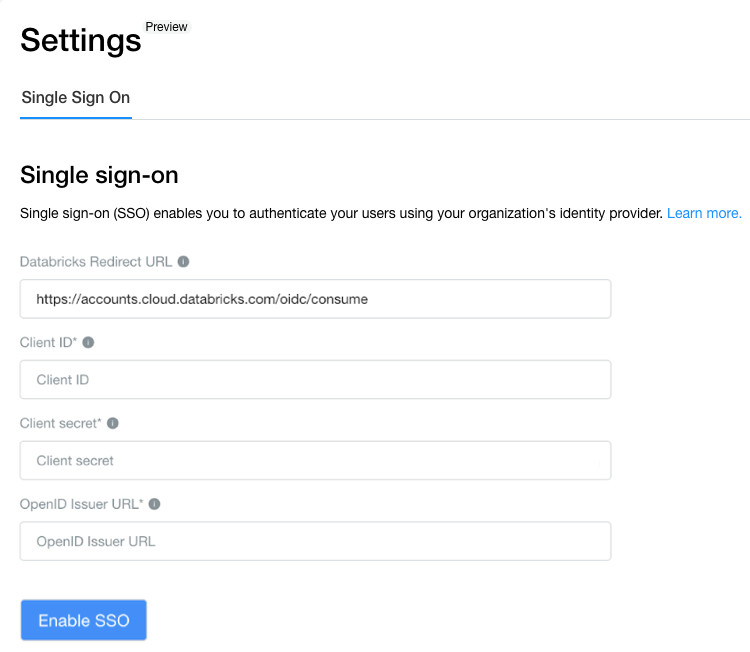
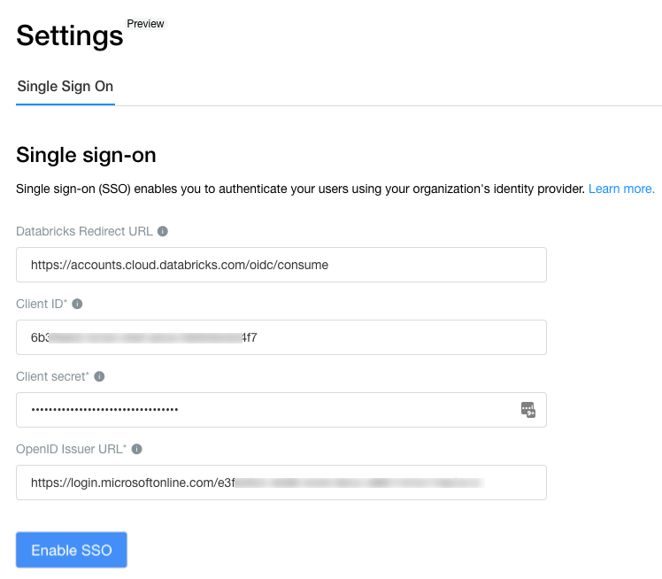

Configure SSO with OneLogin in your Databricks account console
This article shows how to configure OneLogin as the identity provider for single sign-on (SSO) in your Databricks account. OneLogin supports both OpenID Connect (OIDC) and SAML 2.0.
Warning
To prevent getting locked out of Databricks during single sign-on testing, Databricks recommends keeping the account console open in a different browser window.
Enable account single sign-on authentication using OIDC
As an account owner or account admin, log in to the account console and click the Settings icon in the sidebar.
Click the Single sign-on tab.
From the drop-down at the top of this tab, select OpenID Connect.
On the Single sign-on tab, make note of the Databricks Redirect URI value.
In a new browser tab, log in to OneLogin.
Click Administration.
Click Applications.
Click Add App.
Search for
OpenId Connectand select the OpenId Connect (OIDC) app.Enter a name and click Save.
In the Configuration tab, Databricks Redirect URI from step 4. You can choose to configure the other settings or you can leave them to their default values.
In the SSO tab, copy the copy the client ID, client secret, and issuer URL values.
Client ID is the unique identifier for the Databricks application you created in OneLogin.
Client secret is a secret or password generated for the Databricks application that you created. It is used to authorize Databricks with your identity provider.
OpenID issuer URL is the URL at which OneLogin’s OpenID Configuration Document can be found. That OpenID Configuration Document must found be in
{issuer-url}/.well-known/openid-configuration.
Return to the Databricks account console Single sign-on tab and enter values you copied from the identity provider application to the Client ID, Client secret, and OpenID issuer URL fields.
Click Save.
Click Test SSO to validate that your SSO configuration is working properly.
Click Enable SSO to enable single sign-on for your account.
Test account console login with SSO.
Enable account single sign-on authentication using SAML
Follow these steps to create a OneLogin SAML application for use with Databricks account console.
To get the Databricks SAML URL, as an account owner or account admin, log in to the account console. Click Settings in the sidebar and click the Single sign-on tab. From the picker, select SAML 2.0. Copy the value in the Databricks SAML URL field.
In a new browser tab, log in to OneLogin.
Click Administration.
Click Applications.
Click Add App.
Search for SAML Custom Connector (Advanced) and click the result by OneLogin, Inc.
Set Display Name to Databricks.
Click Save. The application’s Info tab loads.
Click Configuration.
In Gather required information, set each of the following fields to the Databricks SAML URL:
Audience
Recipient
ACS (Consumer) URL Validator
ACS (Consumer) URL
Single Logout URL
Login URL
Set SAML signature element to Both.
Click Parameters.
Set Credentials are to Configured by admins and shared by all users.
Click Email. Set the value to email and enable Include in SAML Assertion.
Click the SSO tab.
Copy the following values:
x.509 certificate
Issuer URL
SAML 2.0 endpoint (HTTP)
Verify that SAML signature element is set to Response or Both.
Verify that Encrypt assertion is disabled.
Configure Databricks in the Databricks account console SSO page. See Enable account single sign-on authentication using SAML for details on optional fields.
Click Single sign-on.
Set the SSO type drop-down to SAML 2.0.
Set Single Sign-On URL to the OneLogin SAML 2.0 endpoint.
Set Identity Provider Entity ID to the OneLogin Issuer URL.
Set x.509 Certificate to the OneLogin x.509 certificate, including the markers for the beginning and ending of the certificate.
Click Save.
Click Test SSO to validate that your SSO configuration is working properly.
Click Enable SSO to enable single sign-on for your account.
Test account console login with SSO.